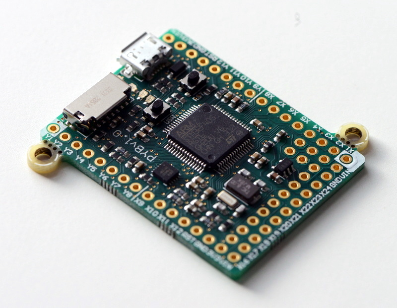
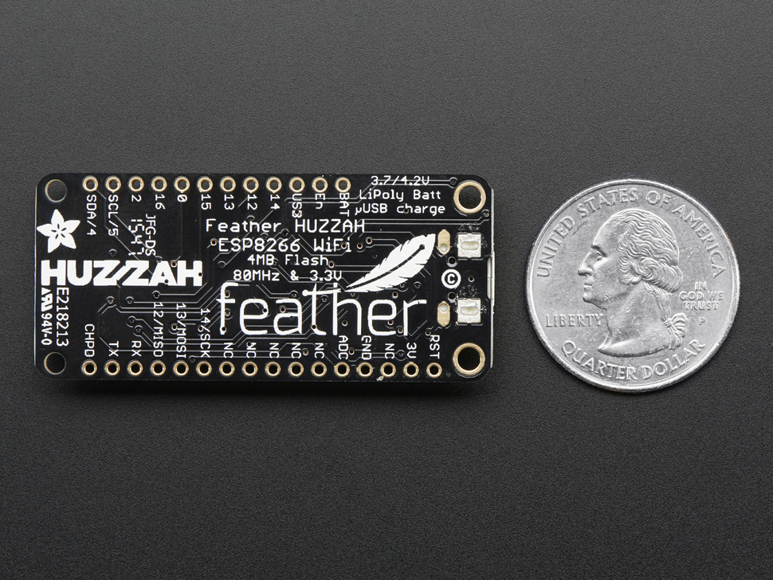

MicroPython
Bringing Python to the Internet of Things
About me
I run XIThing (part of Media2B )
I'm a software guy
Internet of Things, ahoy!
So, MicroPython
Who had heard of it before?
And who used it before?
For something serious / production ready?
So you said no...
MicroPython is a lean and fast implementation of the Python 3 programming language that is optimised to run on a microcontroller.
Kickstarted in November 2013
Other things that happened in 2013
Edward Snowden accidentally sends some documents to the wrong email address
The EU thought Cyprus was a really good boy and gave it €10 billion
People printed a gun and called it the "Lulz Liberator"
Development
Original kickstarter ended April 2015
Initially only on the pyboard, now on multiple chips

This is why
Existing community (that includes you)
Easy to learn, with powerful features
Ideal for rapid prototyping
Bridge between web-world and IoT world
Lots of opportunities for optimization!
Features:
* Classes, list comprehensions, generators, exceptions, ...
Optimization:
* Consts (like #define in C; substitute numeric value for the ID)
* Function calls
* Python is compiled, so compiler optimizations are possible
And why not CPython?
Mainly due to RAM usage. Examples:
Preallocation of 257 + 5 ints = 4k RAM
Method calls: led.intensitivity(1000) = 36 bytes RAM
It's Python! (3.4-ish)
>>> print('Hello world!')
Hello world!
>>> with open('pygrunn.txt') as f:
>>> f.write('Hello PyGrunn!')
>>> try:
>>> 1/0
>>> except ZeroDivisionError as e:
>>> print("Oh, you!")
Oh, you!
But not all of it
>>> import functools
Traceback (most recent call last):
File "<stdin>", line 1, in <module>
ImportError: no module named 'functools'
>>> import this
Traceback (most recent call last):
File "<stdin>", line 1, in <module>
ImportError: no module named 'this'
At least:
sys
time
struct
machine - functions related to the board
micropython - internals
Specific ports provides specific hooks, REPL and custom modules
Oh, also async keywords
async def ping_pygrunn():
return await ping_server('pygrunn.org')
Theoretical minimum system requirements
128K ROM / 8K RAM (after subtracting other software)
Reference implementation: PyBoard
ARM 32bit
168Mhz, 1Mb Flash, 192kb RAM
External standard library
Written in Python
$ micropython -m upip install micropython-functools
$ ./micropython
MicroPython v1.7-116-g8dd704b on 2016-04-19; linux version
Use Ctrl-D to exit, Ctrl-E for paste mode
>>> import functools
>>> dir(functools)
['__name__', 'reduce', 'partial', 'update_wrapper', '__file__', 'wraps']
https://github.com/micropython/micropython-lib
Mainly RAM optimizations
Many strings predefined in ROM (led, on, read, ...)
Optimised method calls (like PyPy)
Integers compressed in pointers
Everything that can be in ROM, is in ROM
Garbage collection: Mark-and-sweep (no reference counts)
You can:
Disable interrupts
Trigger and disable GC
Write inline assembler
Emit bytecode or machine code
Inline assembler
@micropython.asm_thumb
def led_on():
movwt(r0, stm.GPIOA)
movw(r1, 1 << 13)
strh(r1, [r0, stm.GPIO_BSRRL])
Native code emitter
@micropython.native
def foo(self, arg):
# code
Roughly twice as fast
http://hinch.me.uk/html/reference/speed_python.html
The pyboard
Accerelometer, RTC, 4 LEDs, 2 switches, 30 GPIO
BBC micro:bit
Supplied to 1 million school children
25 LEDs
Two programmable buttons
Accelerometer & magnetometer
Bluetooth
5 GPIO
Comes with:
Online Python editor
Graphical drag-and-drop editor
Mobile app to upload code
Tons of documentations, teaching material, etc.
Also runs on ESP8266 chips

Current state of MicroPython
Development
One full time developer, two core contributors
Partly funded by the European Space Agency
Kickstart in May 2016 for proper ESP8266 sockets support
Still feels like early days
ESA: Research and development will focus on making MicroPython more robust for critical embedded systems, with emphasis on determinism of the virtual machine and memory management.
Is it production ready?
Eh, not really (unless you have a micro:bit).
But it's amazing for prototyping!
Or, embedding in games and apps
Summary
We have Python on microcontrollers.
And it works!